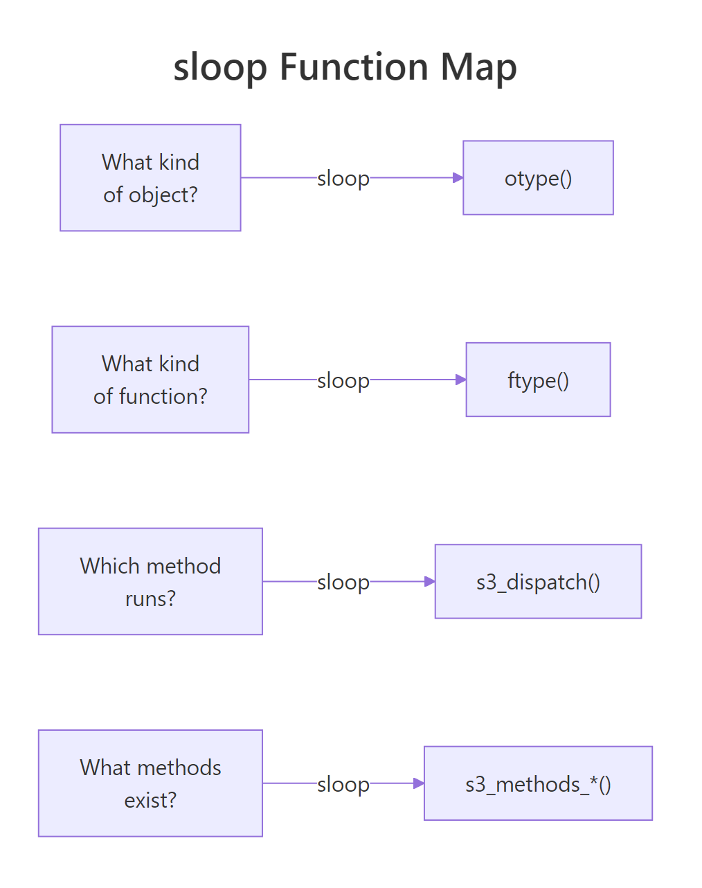

sloop Package in R: otype(), ftype(), Inspect Any Object's OOP System
R has four OOP systems (S3, S4, RC, R6), and from the outside an unfamiliar object rarely tells you which one it uses. The sloop package answers "what kind of object is this?" and "which method will run?" in a single line instead of three base-R calls stitched together.
What does sloop do that base R doesn't?
Suppose a colleague hands you a fitted model and asks why predict() behaves oddly on it. Before you can debug, you need three facts: its class, its OOP system, and which predict method actually runs. Base R makes you chain class(), isS4(), methods(), and getAnywhere() to reach those answers. sloop delivers all three in three short calls, short enough to type from memory.
Here is what that looks like. The block below fits an ordinary linear model, asks sloop what kind of object it is, and then asks which method print() will dispatch to. Read the #> comments as the answers R prints back.
Three lines, three answers. otype() tells you the object is dispatched through S3. s3_dispatch() shows that when you call print(fit), R walks the object's class vector, finds print.lm() first (marked =>), and ignores the fallback print.default() (marked *). Without sloop, that single arrow diagram would take you a class() call, a methods("print") call, and a manual scan.
library(sloop) above errors in the in-browser editor, the #> output still shows what local R would print, and every base-R alternative later in this post runs in-browser as-is.Try it: Swap the linear model for a logistic regression and see which print method wins the dispatch race.
Click to reveal solution
Explanation: A glm object has class c("glm", "lm"), so R first tries print.glm(), then falls back through the hierarchy. The => arrow confirms which method actually runs; * marks defined-but-skipped candidates.
How does otype() identify an object's OOP system?
otype() returns one word, "base", "S3", "S4", or "R6", answering the question "which dispatch engine handles this object?" That answer determines everything else: whether you reach for UseMethod(), setMethod(), or $method() to extend it.
The next block runs otype() across the four OOP systems using objects you already have: a base integer, a data frame (S3), a fitted model (S3), and a fresh S4 class. Expect one-word labels for each.
Four labels cover every R object you will ever inspect. The integer and string carry no class attribute, so they are pure "base". A data frame has a class attribute but no setClass() definition, so it is "S3". The Experiment object was built with new() against a formal setClass(), so it earns the "S4" label.
When sloop is not available, you can reproduce its answer in base R with a single helper. The next block runs inside the in-browser editor and agrees with sloop on the same inputs.
The helper checks four signals in priority order: isS4() catches formal classes, an environment with a clone binding is the tell-tale sign of R6, a class attribute alone implies S3, and anything else is a base type. It is what otype() does internally, now you know the trick.
class() tells you what an object is called (the label); otype() tells you which dispatch engine will process it. Two different questions, two different answers.Try it: Return the OOP system of a factor in one line, using whichever function is available.
Click to reveal solution
Explanation: A factor carries class(ex_f) == "factor" but nothing formal, so both otype() and the helper return "S3".
How does ftype() classify R functions?
otype() answers questions about objects; ftype() answers the parallel question about functions: is this function a generic, a method, a primitive, or something else? That classification tells you whether it participates in method dispatch at all.
The block below calls ftype() on five very different functions. Watch the returned character vectors, they pack two or three labels per call.
Read the labels left-to-right. print is a regular (non-primitive) S3 generic. print.data.frame is registered as the S3 method for the data.frame class. mean is an S3 generic that happens to dispatch on numeric types. sum is a primitive (implemented in C) but still a generic, it has methods you can override. unclass is primitive with no dispatch at all.
When sloop is missing, you can classify a function by inspecting its body for the telltale dispatch calls. The helper below runs in-browser and catches the common cases.
The helper hinges on two magic words. An S3 generic always calls UseMethod() in its body; an S4 generic calls standardGeneric(). Anything else with no body() at all is a primitive written in C. lm() has neither marker, so it is an ordinary function, which is why you cannot add methods to it.
Try it: Is t.test a generic or a regular function? Classify it with whichever tool you have.
Click to reveal solution
Explanation: t.test dispatches on its first argument's class (formula, default, etc.), so its body calls UseMethod("t.test"), a generic in disguise.
How does s3_dispatch() trace S3 method dispatch?
Of sloop's functions, s3_dispatch() is the one you will reach for most often. It answers "when I call generic(x), which method actually runs?", and it draws a little arrow diagram of every candidate R considered on the way there.
The next block runs dispatch on three familiar calls. Each #> line is a method name; the marker on the left tells you what happened to it.
Three dispatch traces, three winners. On a data frame, R finds print.data.frame() immediately, that is the => method and the one that runs. The * next to print.default() means the method exists but was skipped because a more specific one was found first. For the lm fit, dispatch jumps straight to summary.lm(), which is why summary(fit) prints coefficients instead of the five-number list summary() gives a plain vector.
=> marks the method R actually ran; * marks methods that exist but were skipped in favour of something more specific; -> marks a method that NextMethod() will call later in the chain. Internalise these three markers and you can debug any S3 dispatch puzzle, including the "why is my method not being called?" class.selectMethod() or showMethods() when you are inspecting S4 instead.When you cannot load sloop, a short loop over class(x) reproduces the same arrow diagram. The block below walks the class vector manually, testing each generic.class combination with exists().
Same answers, same markers. The loop iterates through class(obj) in order, exists() tests whether each generic.class name resolves to a function, and the first hit earns the => marker. Everything after that either exists-and-was-skipped (*) or does not exist at all (blank). This is exactly the mental model s3_dispatch() wraps.
Try it: Trace dispatch for format() on today's date. Which method wins?
Click to reveal solution
Explanation: Sys.Date() returns an object of class "Date", so R finds format.Date() in the first loop iteration and marks it as the winner. Any fallback format.default() is skipped.
How do you list all methods for a generic or class?
Once you know a generic exists, the next natural question is "what classes have overridden it?" And the mirror question, "given this class, what generics can I call on it?", is equally useful when you are shopping for a class to subclass. sloop answers both with s3_methods_generic() and s3_methods_class().
Both calls return tibbles, which matters more than it sounds: you can filter(), pipe, or count them. The visible column tells you whether the method is exported (callable by name) or registered internally via S3method(), a detail methods() hides.
The base-R equivalent uses the built-in methods() function. It prints a character vector instead of a tibble, but the information content is the same.
Use methods() when you want a quick list in base R and s3_methods_class() when you want to filter or combine with tidyverse pipelines. Both give the same core answer.
Try it: Count how many S3 methods the glm class has in your current session.
Click to reveal solution
Explanation: Both commands enumerate the same set, sloop returns a tibble (use nrow()), base R returns a character vector (use length()). Loading more packages (e.g., broom) will add methods to the count.
Practice Exercises
Exercise 1: Classify a hand-built S3 object
You are handed the following object. Use otype() (or the base-R helper) plus class() and s3_dispatch() to answer three questions: what OOP system is it, what is its class vector, and which print method actually runs?
Click to reveal solution
Explanation: my_obj has a class attribute but no formal definition, so it is S3. Its class vector is c("weekly", "list"), but neither print.weekly nor print.list exists, so dispatch falls all the way through to print.default. This is why custom S3 classes need you to actually write print.classname(), otherwise there is no visible change from a plain list.
Exercise 2: Build a reusable my_inspect() helper
Write my_inspect(x) that prints the object's class vector, its OOP system, and the first five methods registered for class(x)[1]. Run it on a linear model fit.
Click to reveal solution
Explanation: One helper captures the common inspection workflow: class vector, OOP system, available operations. Wrap it in a package or dot-file and reach for it any time a mystery object lands in your session.
Exercise 3: Confirm dispatch on a custom generic
Create a toy generic my_area() with S3 methods for circle and square, build a circle object, and use s3_dispatch() (or the base-R tracer) to confirm which method runs.
Click to reveal solution
Explanation: my_area() is a classic UseMethod()-based S3 generic. Because shape has "circle" first in its class vector, dispatch picks my_area.circle() and returns the correct area. The tracer confirms the choice with a single => line, proof that your generic is wired up correctly.
Complete Example: Investigating a mystery glm
A colleague hands you a fitted model named mystery_fit with no other context. Your job is to walk it through the full sloop/base-R toolkit and produce a one-page briefing: what it is, which OOP system it uses, which print method runs, which operations are legal on it, and what the predict method looks like.
Four steps, one clear picture. mystery_fit is an S3 object with class vector c("glm", "lm"), so it inherits every method defined on lm plus anything glm overrides. print() dispatches to print.glm, which is why the coefficient table is labelled for logistic regression instead of ordinary least squares. The class supports roughly 18 methods, which gives you a toolbox of legal operations. And a quick peek at predict.glm's signature reminds you of the type = "response" argument before you call it blindly.
This is the full debugging workflow in five lines of glue code. Save it as a function and you never have to rebuild it from scratch.
Summary

Figure 1: sloop answers four inspection questions, one function each.
Four questions, four one-liners, and a base-R backup for every case. Keep this table nearby when you are debugging unfamiliar objects in the wild.
| Inspection question | sloop function | Base-R alternative |
|---|---|---|
| Which OOP system? | otype(x) |
isS4() + attr(x, "class") check |
| Is this function a generic/method? | ftype(f) |
Scan body() for UseMethod/standardGeneric |
| Which S3 method runs for this call? | s3_dispatch(gen(x)) |
Walk class(x) + exists("gen.cls") |
| What methods does this generic have? | s3_methods_generic("gen") |
methods("gen") |
| What methods does this class have? | s3_methods_class("cls") |
methods(class = "cls") |
| Find the source of an S3 method | s3_get_method("gen.cls") |
getAnywhere("gen.cls") |
| Is f specifically an S3 generic? | is_s3_generic(f) |
"UseMethod" %in% deparse(body(f)) |
References
- sloop package on CRAN, cran.r-project.org/package=sloop
- Wickham, H., Advanced R, 2nd Edition. Chapter 13: S3. adv-r.hadley.nz/s3.html
- r-lib/sloop on GitHub, github.com/r-lib/sloop
- sloop function reference (pkgdown site), sloop.r-lib.org/reference/index.html
- R Core Team,
methodsdocumentation. stat.ethz.ch/R-manual/R-devel/library/utils/html/methods.html - Chambers, J., Object-Oriented Programming, Functional Programming and R. Statistical Science 29(2), 2014. projecteuclid.org/journals/statistical-science/volume-29/issue-2
Continue Learning
- OOP in R Overview, compare all four OOP systems side by side with runnable examples.
- S3 Method Dispatch in R, a deeper dive into
UseMethod(),NextMethod(), and the full dispatch algorithm. - S4 Classes in R, the formal OOP system that sloop's
s3_dispatch()does not cover.